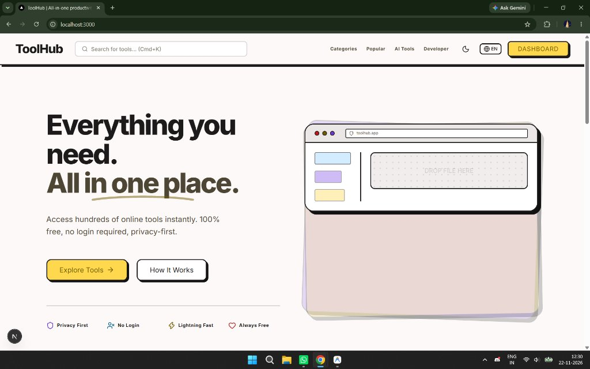

C.A.S.P.E.R Autonomous Desktop Agent
Autonomous multi-modal desktop assistant engineered with Python and PyQt6. Features local neural LLM inference via Ollama, sub-second speech synthesis, voice intent parsing, and local desktop task automation.
- Zero cloud dependency: Runs 100% offline with zero audio leaks
- Casper Studio GUI with live waveform & state indicators
- Memory context graph tracking user desktop workflows
REPO: github.com/rishabkr0/c.a.s.p.e.r ↗

ToolHub Client-Side Privacy Suite
All-in-one suite of free, zero-upload online document utilities. Multi-file PDF merge, split, page reorder, image compression, and regex text scrubbers running purely on Web Workers and WebAssembly.
- 100% Client-Side: 0 bytes uploaded to any external server
- Instant file operations with zero network latency
- Web Worker thread isolation preventing UI freeze
REPO: github.com/rishabkr0/toolhub ↗